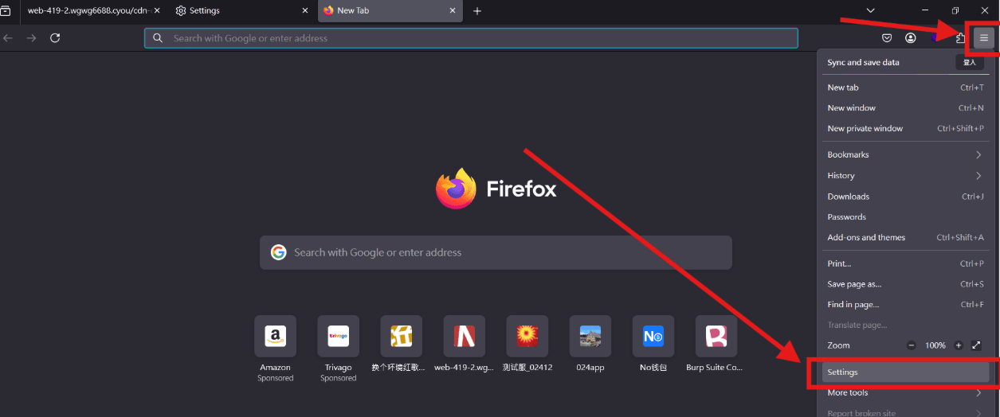
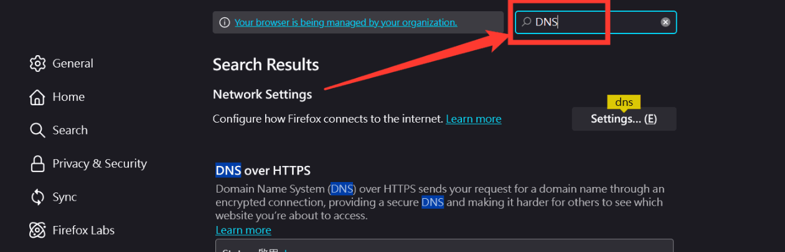
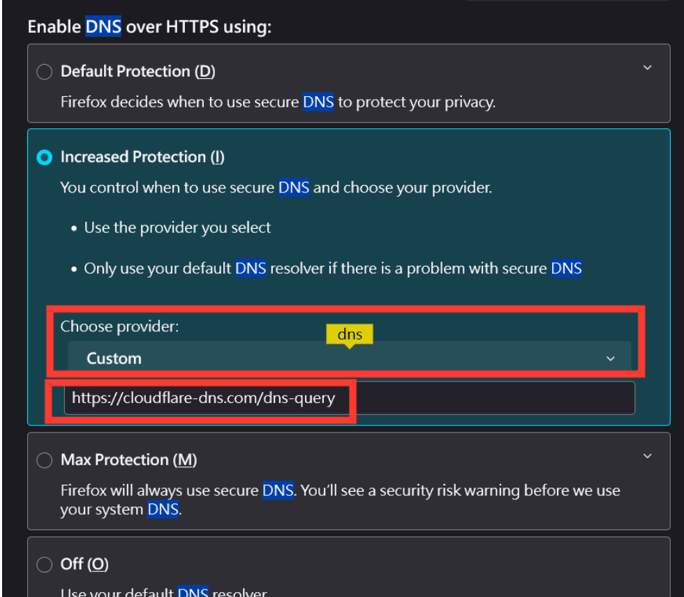
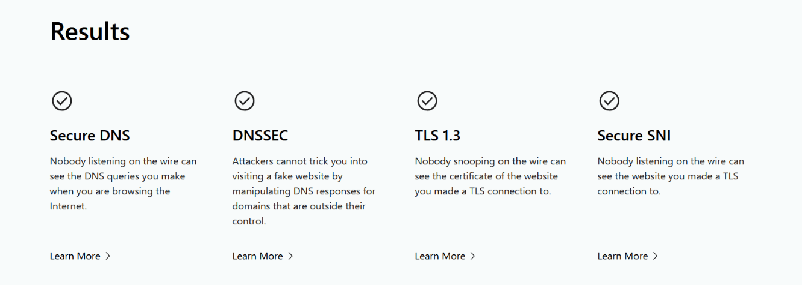
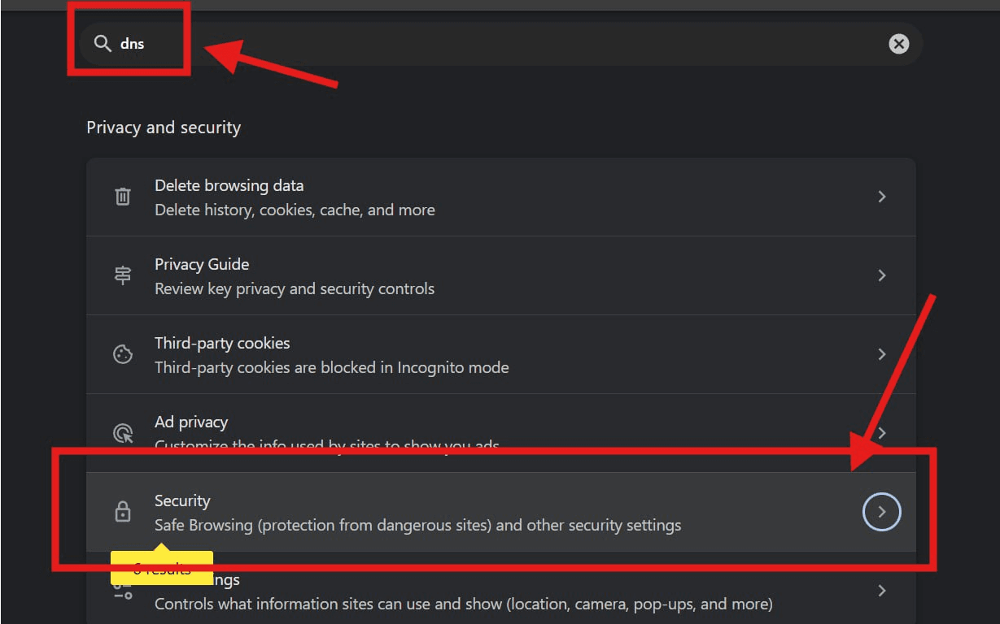
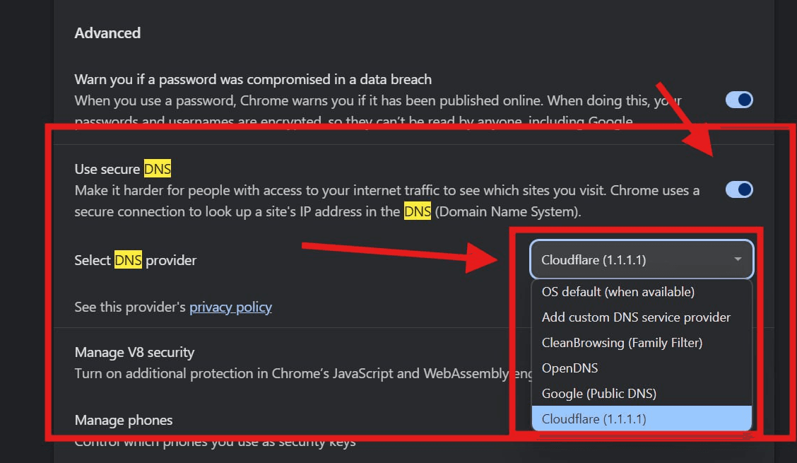
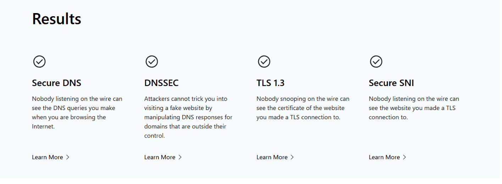
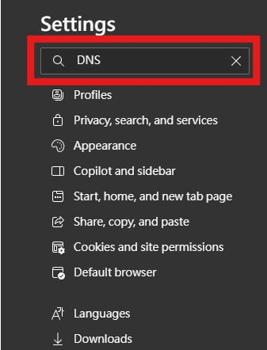
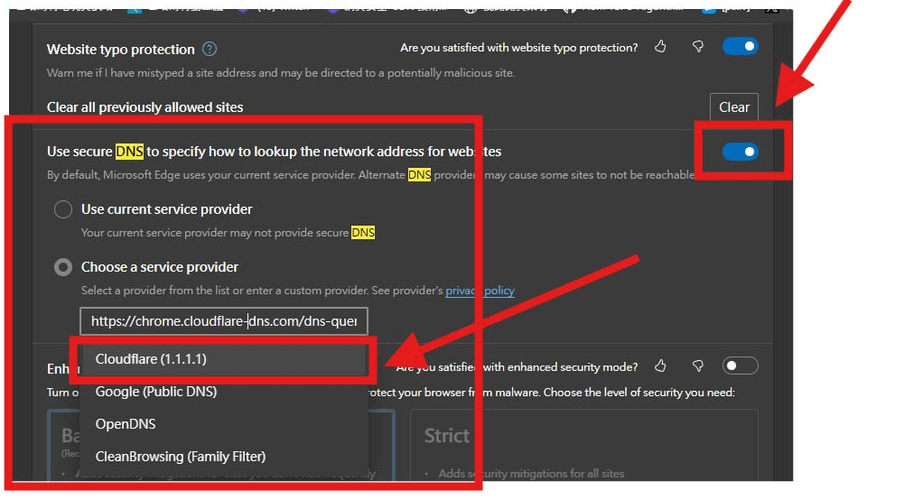
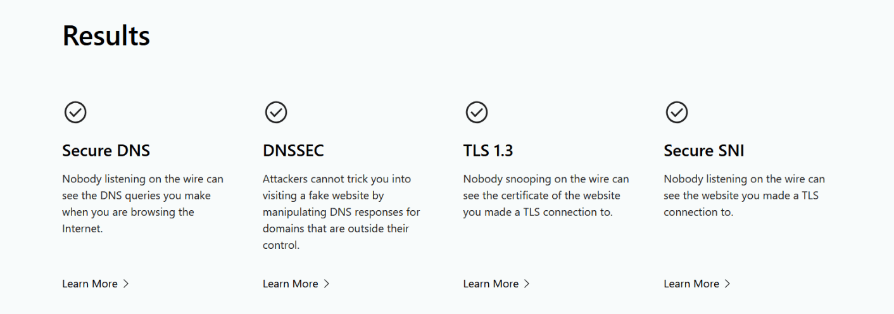

用户端配置
ECH 在新版浏览器中都默认启用，需要开启 DoH 配置才可以生效。以下皆为浏览器方式实现，不分电脑或手机皆可使用。
Firefox 火狐
Firefox 版本 119 起，ECH 默认启用
按照以下步骤开启 DoH
- 点击屏幕右上方的菜单
PhotonMenuButton按钮。 - 点击
settings。
- 上方搜寻输入
DNS往下寻找到DNS over HTTPS
- 按照图下配置选择供应商
Custom并在下方输入https://cloudflare-dns.com/dns-query
完成后可至 https://www.cloudflare.com/zh-tw/ssl/encrypted-sni/ 进行检验是否开启

参考: https://support.mozilla.org/kb/dns-over-https
Chrome
- 点击右上方的菜单
Settins and more按钮。 - 点击
settings。 - 上方搜寻输入
DNS往下点击Security
- 寻找
Use secure DNS点击启用，并选择自定义供应Cloudflare(1.1.1.1)
完成后可至 https://www.cloudflare.com/zh-tw/ssl/encrypted-sni/ 进行检验是否开启

EDGE
EDGE 版本 108 起，ECH 默认启用
按照以步骤开启 DoH
- 点击右上方的菜单
Settins and more按钮。 - 点击
settings。 - 左侧搜寻输入
DNS
- 往下寻找到
Use secure DNS to specify how to lookup the network address for websites并点选开启 - 选择
Choose a service provider并点击Cloudflare(1.1.1.1)
完成后可至 https://www.cloudflare.com/zh-tw/ssl/encrypted-sni/ 进行检验是否开启
